Un thème de l'épreuve d'analyse de la vision (U5, coefficient 6) du BTS Opticien-Lunetier. Il est tombé à chacune des 4 sessions analysées. Sur cette page : 5 questions corrigées.
Cherche d'abord ta réponse, puis ouvre la correction.
Type BTS 2024 · Niveau facile
Test de Worth, filtre rouge sur l'OD, filtre vert sur l'OG. Le sujet ne voit que 2 symboles rouges. Conclusion ?
Neutralisation de l'OG
Neutralisation de l'OD
Diplopie
Vision binoculaire normale
Voir la correction de la question 1
Réponse A. Neutralisation de l'OG
Seul l'œil au filtre rouge (OD) perçoit : il voit son marqueur monoculaire rouge et l'élément fusionnel blanc, qui lui paraît rouge. Les marqueurs verts de l'OG manquent : pas de vision simultanée (1er degré), donc pas de fusion (2e degré). L'OG est neutralisé.

Type BTS 2022 · Niveau moyen
Filtre rouge sur l'OD. Le sujet voit 4 symboles, l'élément fusionnel lui paraît rosé. Conclusion ?
Neutralisation de l'OG
Diplopie homonyme
Vision binoculaire avec dominance de l'OD
Vision binoculaire avec dominance de l'OG
Voir la correction de la question 2
Réponse C. Vision binoculaire avec dominance de l'OD
4 symboles = vision simultanée et fusion. L'élément fusionnel prend la couleur de l'œil dominant : rosé = l'œil au filtre rouge, l'OD.
Type BTS 2023 · Niveau facile
Test de Worth, filtre rouge sur l'OD, filtre vert sur l'OG. Le sujet ne voit que 3 symboles verts. Conclusion ?
Neutralisation de l'OG
Neutralisation de l'OD
Diplopie croisée
Dominance de l'OD
Voir la correction de la question 3
Réponse B. Neutralisation de l'OD
Seul l'œil au filtre vert (OG) perçoit : ses 2 marqueurs verts plus l'élément fusionnel blanc, vu vert (le filtre ne laisse passer que sa couleur). L'OD est neutralisé. Piège classique : l'élément fusionnel prend toujours la couleur du filtre de l'œil qui voit.
Type BTS 2023 · Niveau facile
Au test de Worth, le sujet voit 5 symboles. Que met-on en évidence ?
Une neutralisation
Une diplopie : vision simultanée présente, mais pas de fusion
Une vision binoculaire normale
Une amblyopie
Voir la correction de la question 4
Réponse B. Une diplopie : vision simultanée présente, mais pas de fusion
Les marqueurs des deux yeux sont vus : le 1er degré (vision simultanée) est présent. L'élément fusionnel est vu double : le 2e degré (fusion) manque. Le sens de la diplopie (homonyme ou croisée) indique ensuite la phorie associée.
Type BTS 2020 · Niveau moyen
Filtre rouge sur l'OD. Le sujet voit 5 symboles, les rouges à DROITE des verts. Type de diplopie et phorie associée ?
Diplopie croisée, exophorie associée
Diplopie homonyme, ésophorie associée
Diplopie croisée, ésophorie associée
Diplopie homonyme, exophorie associée
Voir la correction de la question 5
Réponse B. Diplopie homonyme, ésophorie associée
L'image de l'OD (rouge) est du côté de l'OD (à droite) : diplopie homonyme. Loi de Desmarres : homonyme = éso, croisée = exo. C'est donc une ésophorie associée.

Le QCM compte 5 questions sur ce thème. Chacune est corrigée et expliquée, et celles que tu rates reviennent toutes seules à 1, 3, 7, 14 et 30 jours.